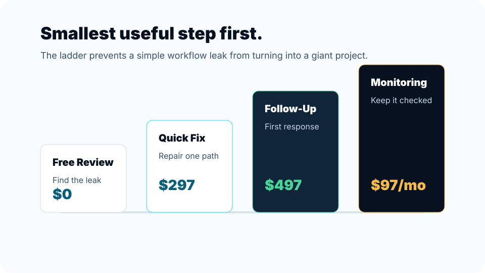
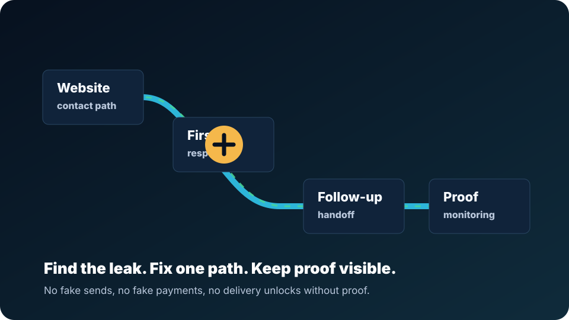

Offer route
The smallest useful paid step follows the free review.
Question to context, context to offer, offer to proof, proof to memory, memory to the next better action.

Atlas keeps public answers helpful without exposing internal blockers, stale status, private data, or unsupported claims.

The smallest useful paid step follows the free review.

External action claims require proof before they count.

Useful lessons and blockers become durable system memory.